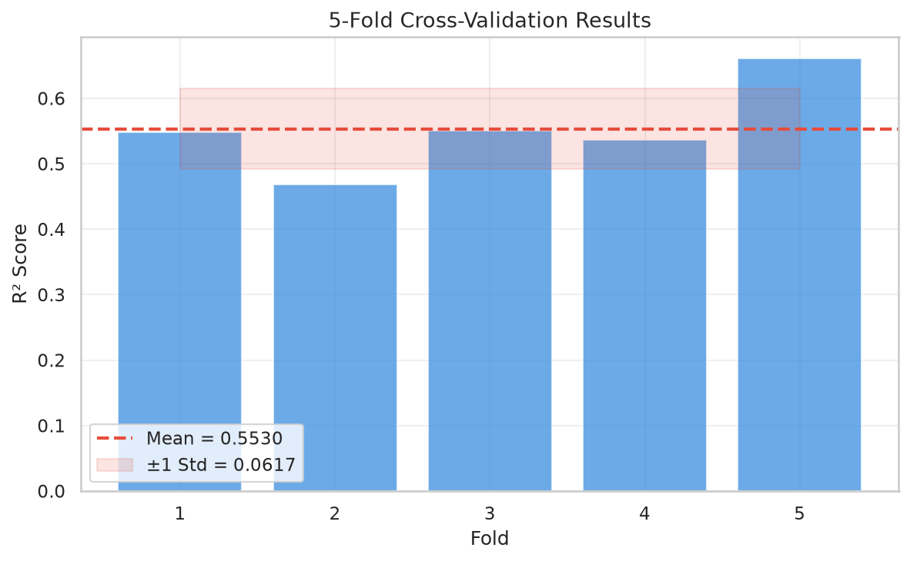
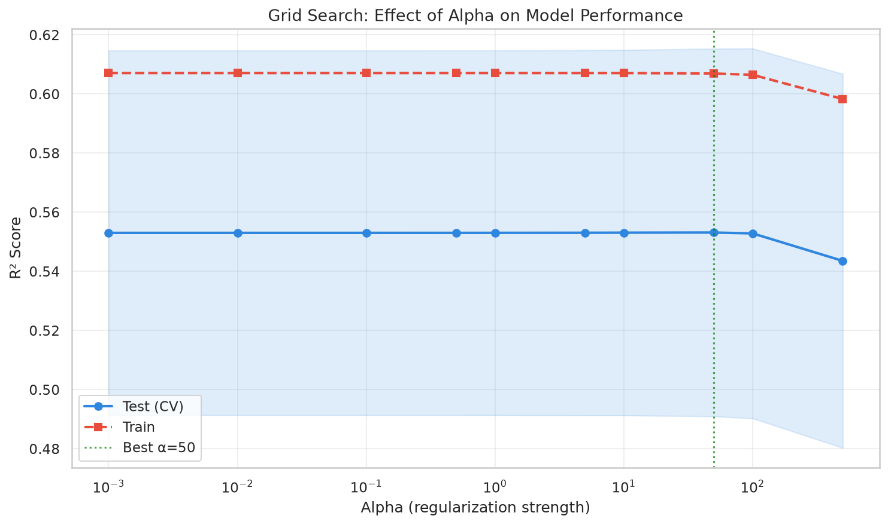
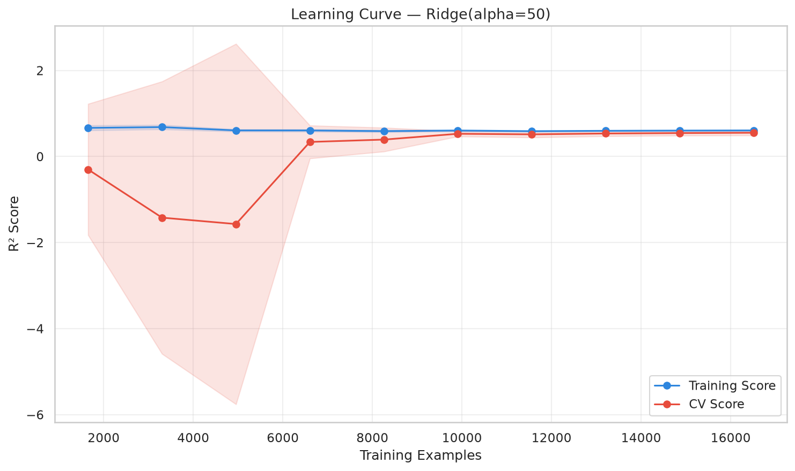

📊 Dataset: California Housing (20,640 rows, 8 features)
"kw">class="cmt"># Demonstrate overfitting
model = Ridge(alpha=0.0001) "kw">class="cmt"># Near-zero regularization
model.fit(X_train, y_train)
train_r2 = r2_score(y_train, model.predict(X_train))
test_r2 = r2_score(y_test, model.predict(X_test))
"kw">print(f'Train R²: {train_r2:.4f}, Test R²: {test_r2:.4f}, Gap: {train_r2-test_r2:.4f}')
"kw">class="cmt"># Regularized version
model_r = Ridge(alpha=10)
model_r.fit(X_train, y_train)
"kw">print(f'Regularized: Train R²={r2_score(y_train, model_r.predict(X_train)):.4f}, '
f'Test R²={r2_score(y_test, model_r.predict(X_test)):.4f}')"kw">from sklearn.model_selection "kw">import cross_val_score
scores = cross_val_score(Ridge(alpha=1.0), X_scaled, y, cv=5, scoring='r2')
"kw">print(f'CV scores: {scores}')
"kw">print(f'Mean: {scores.mean():.4f} ± {scores.std():.4f}')
5-Fold CV scores with mean ± std band
"kw">from sklearn.model_selection "kw">import GridSearchCV
param_grid = {'alpha': [0.001, 0.01, 0.1, 0.5, 1, 5, 10, 50, 100, 500]}
grid = GridSearchCV(Ridge(), param_grid, cv=5, scoring='r2')
grid.fit(X_scaled, y)
"kw">print(f'Best alpha: {grid.best_params_["alpha"]}')
"kw">print(f'Best CV R²: {grid.best_score_:.4f}')
Grid search: effect of alpha on performance
"kw">from sklearn.model_selection "kw">import learning_curve
train_sizes, train_scores, test_scores = learning_curve(
Ridge(alpha=1.0), X_scaled, y,
train_sizes=np.linspace(0.1, 1.0, 10), cv=5)
"kw">class="cmt"># Training curve converges "kw">with CV curve → no severe overfitting
Learning curve showing train vs validation scores
1️⃣ K-Fold CV 的 K=5 意味着什么？如果 K 改成 10 会怎样？
2️⃣ Grid Search 找到的最佳 alpha=1.0。如果你用了 alpha=0.001 会怎样？
3️⃣ 学习曲线中，训练分数和 CV 分数之间的 gap 很大说明什么？
4️⃣ 为什么不能用测试集来调参？